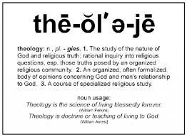

목차
- 9/1
- 9/2
- 9/3
- 9/4
9/3 성경수업

Introduction
The Meaning of Theology
- Thomas Oden (1931-) - “Theology...is reasoned
discourse about God gained either by rational
reflection or by response to God’s self-disclosure
in history. Christian theology is the orderly
exposition of Christian teaching. It sets forth
that understanding of God that is made known in
Jesus Christ. It seeks to provide a coherent
reflection on the living God as understood in the
community whose life is ‘in Christ’.” Positive
- Francis Schussler Fiorenza (1941— ) - Theology
is a fragile discipline in that it is both academic
and related to faith. As an academic discipline,
theology shares all the scholarly goals of other
academic disciplines: it strives for historical
exactitude, conceptual rigor, systematic consistency,
and interpretive clarity. In its relation to faith,
theology… Fragility of the theology
- Paul Tillich (1886-1965) - “Theology, as a
function of the Christian church, must serve
the needs of the church. A theological system
is supposed to satisfy two basic needs: the
statement of truth of the Christian message
and the interpretation of this truth for every
new generation. Theology moves back and forth
between two poles, the eternal truth of its
foundation and the temporal situation in which
the eternal truth must be received.” Practical
so that we may apply it to our lives.